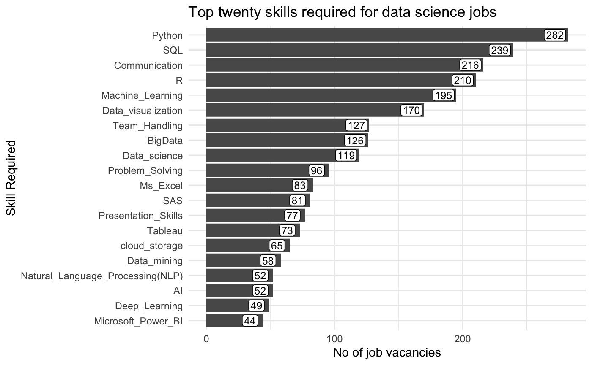
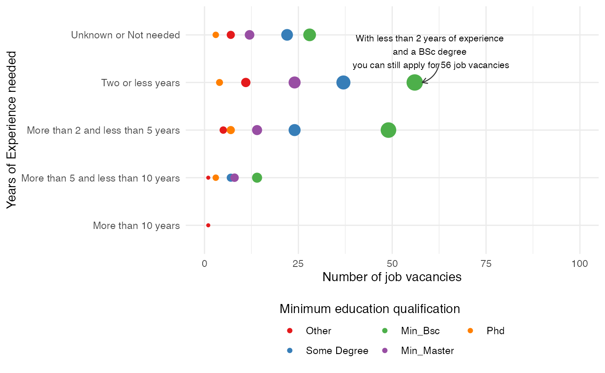

The package contains two datasets
DSraw : Raw dataset with 551 rows and 152 columnsDStidy : Cleaned tidy dataset with 1172 rows and 109 columnsBoth of these datasets contain information about job vacancies related to data science, which were collected for the span of a month, by searching for specific Search_Term and then following the search results to gather data manually.
# install devtools if not already installed
# install.packages("devtools")
devtools::install_github("thiyangt/DSjobtracker")
data("DStidy_2020")
tibble::glimpse(DStidy_2020)
#> Rows: 430
#> Columns: 115
#> $ ID <int> 1, 2, 3, 4, 5, 6, 7, 8, 9, 10, 11, …
#> $ Consultant <chr> "Thiyanga", "Jayani", "Jayani", "Ja…
#> $ DateRetrieved <date> 2020-08-05, 2020-08-07, 2020-08-07…
#> $ DatePublished <date> NA, 2020-07-31, 2020-08-06, 2020-0…
#> $ Job_title <chr> NA, "Junior Data Scientist", "Engin…
#> $ Company <chr> NA, "Dialog Axiata PLC", "London St…
#> $ R <fct> 1, 1, 0, 1, 0, 1, 1, 0, 0, 1, 0, 0,…
#> $ SAS <fct> 1, 0, 0, 1, 1, 0, 0, 0, 0, 0, 0, 0,…
#> $ SPSS <fct> 0, 0, 0, 1, 1, 0, 0, 0, 0, 0, 0, 0,…
#> $ Python <fct> 1, 1, 1, 0, 0, 1, 1, 0, 0, 1, 0, 0,…
#> $ MAtlab <fct> 1, 0, 0, 0, 0, 0, 0, 0, 0, 0, 0, 0,…
#> $ Scala <fct> 0, 0, 0, 0, 0, 0, 0, 0, 0, 0, 0, 0,…
#> $ C_Sharp <fct> 0, 0, 0, 0, 0, 0, 0, 0, 0, 0, 0, 0,…
#> $ MS_Word <fct> 0, 0, 0, 0, 1, 0, 0, 1, 0, 0, 0, 1,…
#> $ Ms_Excel <fct> 0, 0, 0, 0, 1, 0, 0, 1, 0, 0, 0, 1,…
#> $ OLE_DB <fct> 0, 0, 0, 0, 0, 0, 0, 0, 0, 0, 0, 0,…
#> $ Ms_Access <fct> 0, 0, 0, 0, 1, 0, 0, 0, 0, 0, 0, 1,…
#> $ Ms_PowerPoint <fct> 0, 0, 0, 0, 1, 0, 0, 1, 0, 0, 0, 0,…
#> $ Spreadsheets <fct> 0, 0, 0, 0, 0, 0, 0, 0, 0, 0, 0, 0,…
#> $ Data_visualization <fct> 0, 1, 1, 0, 0, 0, 0, 1, 0, 0, 0, 0,…
#> $ Presentation_Skills <fct> 0, 0, 0, 0, 0, 0, 0, 0, 0, 0, 0, 0,…
#> $ Communication <fct> 0, 0, 0, 0, 0, 0, 0, 0, 0, 0, 0, 0,…
#> $ BigData <fct> 0, 1, 1, 0, 0, 0, 0, 0, 1, 0, 1, 0,…
#> $ Data_warehouse <fct> 0, 1, 0, 0, 0, 0, 0, 0, 0, 0, 0, 0,…
#> $ cloud_storage <fct> 0, 1, 0, 0, 0, 0, 0, 0, 0, 0, 0, 0,…
#> $ Google_Cloud <fct> 0, 0, 0, 0, 0, 0, 0, 0, 0, 0, 0, 0,…
#> $ AWS <fct> 0, 0, 0, 0, 0, 0, 0, 0, 0, 0, 0, 0,…
#> $ Machine_Learning <fct> 0, 1, 1, 0, 0, 1, 0, 0, 1, 0, 1, 0,…
#> $ Deep_Learning <fct> 0, 0, 0, 0, 0, 0, 0, 0, 0, 0, 0, 0,…
#> $ Computer_vision <fct> 0, 0, 0, 0, 0, 0, 0, 0, 0, 0, 0, 0,…
#> $ Java <fct> 0, 0, 0, 0, 0, 1, 0, 0, 0, 0, 1, 0,…
#> $ Cpp <fct> 0, 0, 0, 0, 0, 1, 0, 0, 0, 0, 0, 0,…
#> $ C <fct> 0, 0, 0, 0, 0, 1, 0, 0, 0, 0, 0, 0,…
#> $ Linux_Unix <fct> 0, 0, 0, 0, 0, 0, 0, 0, 0, 0, 0, 0,…
#> $ SQL <fct> 1, 0, 0, 1, 1, 1, 1, 0, 1, 1, 1, 0,…
#> $ NoSQL <fct> 0, 0, 0, 0, 0, 0, 0, 0, 0, 0, 0, 0,…
#> $ RDBMS <fct> 0, 0, 0, 0, 0, 0, 0, 0, 0, 0, 0, 0,…
#> $ Oracle <fct> 0, 0, 0, 0, 1, 0, 0, 0, 0, 0, 0, 0,…
#> $ MySQL <fct> 0, 0, 0, 0, 1, 0, 0, 1, 0, 0, 1, 0,…
#> $ PHP <fct> 0, 0, 0, 0, 0, 0, 0, 1, 0, 0, 0, 0,…
#> $ Flash_Actionscript <fct> 0, 0, 0, 0, 0, 0, 0, 1, 0, 0, 0, 0,…
#> $ SPL <fct> 0, 0, 0, 0, 0, 0, 0, 0, 0, 0, 0, 0,…
#> $ web_design_and_development_tools <fct> 0, 0, 0, 0, 0, 0, 0, 1, 0, 0, 0, 0,…
#> $ Wordpress <fct> 0, 0, 0, 0, 0, 0, 0, 0, 0, 0, 0, 0,…
#> $ AI <fct> 0, 0, 0, 0, 0, 0, 0, 0, 0, 0, 0, 0,…
#> $ `Natural_Language_Processing(NLP)` <fct> 0, 0, 1, 0, 0, 0, 1, 0, 0, 0, 0, 0,…
#> $ Microsoft_Power_BI <fct> 0, 0, 1, 0, 0, 0, 0, 0, 0, 0, 0, 0,…
#> $ Google_Analytics <fct> 0, 0, 0, 0, 0, 0, 0, 0, 0, 0, 0, 0,…
#> $ graphics_and_design_skills <fct> 0, 0, 0, 0, 0, 0, 0, 1, 0, 0, 0, 0,…
#> $ Data_marketing <fct> 0, 0, 0, 0, 0, 0, 0, 0, 0, 0, 0, 0,…
#> $ SEO <fct> 0, 0, 0, 0, 0, 0, 0, 0, 0, 0, 0, 0,…
#> $ Content_Management <fct> 0, 0, 0, 0, 0, 0, 0, 0, 0, 0, 0, 0,…
#> $ Tableau <fct> 0, 0, 0, 0, 0, 0, 0, 0, 0, 1, 0, 0,…
#> $ D3 <fct> 0, 0, 0, 0, 0, 0, 0, 0, 0, 1, 0, 0,…
#> $ Alteryx <fct> 0, 0, 0, 0, 0, 0, 0, 0, 0, 0, 0, 0,…
#> $ KNIME <fct> 0, 0, 0, 0, 0, 0, 0, 0, 0, 0, 0, 0,…
#> $ Spotfire <fct> 0, 0, 0, 0, 0, 0, 0, 0, 0, 0, 0, 0,…
#> $ Spark <fct> 0, 0, 0, 0, 0, 1, 0, 0, 0, 1, 0, 0,…
#> $ S3 <fct> 0, 0, 0, 0, 0, 1, 0, 0, 0, 0, 0, 0,…
#> $ Redshift <fct> 0, 0, 0, 0, 0, 1, 0, 0, 0, 0, 0, 0,…
#> $ DigitalOcean <fct> 0, 0, 0, 0, 0, 1, 0, 0, 0, 0, 0, 0,…
#> $ Javascript <fct> 0, 0, 0, 0, 0, 1, 0, 0, 0, 0, 0, 0,…
#> $ Kafka <fct> 0, 0, 0, 0, 0, 0, 0, 0, 0, 0, 0, 0,…
#> $ Storm <fct> 0, 0, 0, 0, 0, 0, 0, 0, 0, 0, 0, 0,…
#> $ Bash <fct> 0, 0, 0, 0, 0, 0, 0, 0, 0, 0, 0, 0,…
#> $ Hadoop <fct> 0, 0, 0, 0, 0, 0, 0, 0, 0, 0, 1, 0,…
#> $ Data_Pipelines <fct> 0, 0, 0, 0, 0, 0, 0, 0, 0, 0, 0, 0,…
#> $ MPP_Platforms <fct> 0, 0, 0, 0, 0, 0, 0, 0, 0, 0, 0, 0,…
#> $ Qlik <fct> 0, 0, 0, 0, 0, 0, 0, 0, 0, 0, 0, 0,…
#> $ Pig <fct> 0, 0, 0, 0, 0, 0, 0, 0, 0, 0, 0, 0,…
#> $ Hive <fct> 0, 0, 0, 0, 0, 0, 0, 0, 0, 0, 1, 0,…
#> $ Tensorflow <fct> 0, 0, 0, 0, 0, 0, 0, 0, 0, 0, 0, 0,…
#> $ Map_Reduce <fct> 0, 0, 0, 0, 0, 0, 0, 0, 0, 0, 0, 0,…
#> $ Impala <fct> 0, 0, 0, 0, 0, 0, 0, 0, 0, 0, 0, 0,…
#> $ Solr <fct> 0, 0, 0, 0, 0, 0, 0, 0, 0, 0, 0, 0,…
#> $ Teradata <fct> 0, 0, 0, 0, 0, 0, 0, 0, 0, 0, 0, 0,…
#> $ MongoDB <fct> 0, 0, 0, 0, 0, 0, 0, 0, 0, 0, 0, 0,…
#> $ Elasticsearch <fct> 0, 0, 0, 0, 0, 0, 0, 0, 0, 0, 0, 0,…
#> $ YOLO <fct> 0, 0, 0, 0, 0, 0, 0, 0, 0, 0, 0, 0,…
#> $ agile_execution <fct> 0, 0, 0, 0, 0, 0, 0, 0, 0, 0, 1, 0,…
#> $ Data_management <fct> 0, 0, 0, 0, 0, 0, 0, 0, 0, 0, 0, 0,…
#> $ pyspark <fct> 0, 0, 0, 0, 0, 0, 0, 0, 0, 0, 0, 0,…
#> $ Data_mining <fct> 0, 0, 0, 0, 0, 1, 0, 0, 0, 0, 0, 0,…
#> $ Data_science <fct> 0, 0, 0, 0, 0, 0, 0, 0, 1, 0, 0, 0,…
#> $ Web_Analytic_tools <fct> 0, 0, 0, 0, 0, 0, 0, 0, 0, 0, 0, 0,…
#> $ IOT <fct> 0, 0, 0, 0, 0, 0, 0, 0, 0, 0, 0, 0,…
#> $ Numerical_Analysis <fct> 0, 0, 0, 0, 0, 0, 0, 0, 0, 0, 0, 0,…
#> $ Economic <fct> 0, 0, 0, 0, 0, 0, 0, 0, 0, 0, 0, 0,…
#> $ Finance_Knowledge <fct> 0, 0, 0, 0, 0, 0, 0, 0, 0, 0, 0, 0,…
#> $ Investment_Knowledge <fct> 0, 0, 0, 0, 0, 0, 0, 0, 0, 0, 0, 0,…
#> $ Problem_Solving <fct> 0, 0, 0, 0, 0, 0, 0, 0, 0, 0, 0, 0,…
#> $ Korean_language <fct> 0, 0, 0, 0, 0, 0, 0, 0, 0, 0, 0, 0,…
#> $ Bash_Linux_Scripting <fct> 0, 0, 0, 0, 0, 0, 0, 0, 0, 0, 0, 0,…
#> $ Team_Handling <fct> 0, 0, 0, 0, 0, 0, 0, 0, 0, 0, 0, 0,…
#> $ Debtor_reconcilation <fct> 0, 0, 0, 0, 0, 0, 0, 0, 0, 0, 0, 0,…
#> $ Payroll_management <fct> 0, 0, 0, 0, 0, 0, 0, 0, 0, 0, 0, 0,…
#> $ Bayesian <fct> 0, 0, 0, 0, 0, 0, 0, 0, 0, 0, 0, 0,…
#> $ Optimization <fct> 0, 0, 0, 0, 0, 0, 0, 0, 0, 0, 0, 0,…
#> $ Bahasa_Malaysia <fct> 0, 0, 0, 0, 0, 0, 0, 0, 0, 0, 0, 0,…
#> $ Knowledge_in <chr> NA, NA, "Elasticsearch, Logstash, K…
#> $ City <chr> NA, "Colombo", "Colombo", "Colombo"…
#> $ Location <chr> "NY", "LK", "LK", "LK", "LK", "Mala…
#> $ Educational_qualifications <chr> NA, "Degree in Engineering / IT or …
#> $ Salary <chr> NA, NA, NA, NA, NA, NA, NA, NA, NA,…
#> $ English_proficiency <chr> NA, NA, NA, NA, NA, NA, "1", NA, NA…
#> $ URL <chr> NA, "https://www.google.com/search?…
#> $ Search_Term <chr> NA, "Data Analysis Jobs in Sri Lank…
#> $ Job_Category <fct> Unimportant, Data Science, Data Sci…
#> $ Minimum_Years_of_experience <dbl> 4, 2, 1, 2, 0, 5, 0, 0, 1, 7, 5, 2,…
#> $ Experience <chr> "4+", "2-3", "1-2", "2+", "0 years_…
#> $ Experience_Category <fct> More than 2 and less than 5 years, …
#> $ Job_Country <chr> NA, "Sri Lanka", "Sri Lanka", "Sri …
#> $ Edu_Category <fct> NA, Some Degree, Some Degree, Some …
#> $ Minimum_Salary <dbl> NA, NA, NA, NA, NA, NA, NA, NA, NA,…
#> $ Salary_Basis <fct> unspecified, unspecified, unspecifi…More information on the meanings of the column names can be accessed through the help
?DStidy_2020
library(tidyr)
library(magrittr)
library(dplyr)
library(ggplot2)
library(wordcloud2)
library(viridis)
library(forcats)
theme_set(theme_minimal())
skills_long <- DStidy_2020 %>%
select(c(R:Bahasa_Malaysia)) %>%
pivot_longer(c(R:Bahasa_Malaysia), values_to = "Value", names_to = "Name") %>%
mutate(Value = as.numeric(levels(Value))[Value]) %>%
group_by(Name) %>%
summarize(Total = sum(Value)) %>%
arrange(Total)
skills_long %>%
mutate(Name = factor(Name, levels = .$Name)) %>%
top_n(20) %>%
ggplot(aes(x = Name, y = Total)) +
geom_bar(stat = "identity") +
geom_label(aes(label = Total),
nudge_y = -10, size = 3.25,
label.padding = unit(0.125, "lines")
) +
coord_flip() +
labs(
title = "Top twenty skills required for data science jobs",
x = "Skill Required", y = "No of job vacancies"
)
not_software_columns <- c(
"Presentation_Skills", "Data_visualization",
"Spreadsheets", "BigData",
"Communication", "BigData",
"Data_warehouse", "cloud_storage",
"Google_Cloud", "Machine_Learning",
"Computer_vision", "Deep_Learning", "RDBMS",
"web_design_and_development_tools", "AI",
"Natural_Language_Processing(NLP)",
"graphics_and_design_skills", "Data_marketing",
"SEO", "Content_Management",
"Data_Pipelines", "MPP_Platforms", "agile_execution",
"Data_management", "Data_mining", "Data_science",
"Web_Analytic_tools", "IOT",
"Numerical_Analysis", "Finance_Knowledge", "Economic",
"Investment_Knowledge", "Problem_Solving",
"Korean_language", "Team_Handling",
"Debtor_reconcilation", "Payroll_management",
"Bayesian", "Optimization", "Bahasa_Malaysia"
)
indicators <- DStidy_2020 %>%
select(c(R:Bahasa_Malaysia))
software_indicators <- indicators %>%
select(colnames(.)[!colnames(.) %in% not_software_columns])
software_indicators_long <- software_indicators %>%
pivot_longer(colnames(.), values_to = "Value", names_to = "Name") %>%
mutate(Value = as.numeric(levels(Value))[Value]) %>%
group_by(Name) %>%
summarize(Total = sum(Value)) %>%
arrange(Total)
wordcloud2(software_indicators_long %>%
transmute(word = Name, freq = log(Total)),
size = 0.35,
minRotation = pi / 2, maxRotation = pi / 2,
color = viridis(nrow(software_indicators_long)),
fontFamily = "Montserrat"
)The log of the counts were used to visualize them better
count_data <- DStidy_2020 %>%
select(Experience_Category, Edu_Category) %>%
filter(!is.na(Edu_Category)) %>%
count(Experience_Category, Edu_Category)
max_vacancies <- max(count_data$n)
count_data %>%
ggplot(aes(x = fct_rev(Experience_Category), y = n, color = Edu_Category, size = n)) +
geom_point() +
geom_curve(
data = tibble(
x1 = c(4.4), x2 = c(4),
y1 = c(62.5), y2 = c(58)
),
aes(x = x1, y = y1, xend = x2, yend = y2),
arrow = arrow(length = unit(0.07, "inch")), size = 0.4,
color = "gray20", curvature = -0.3
) +
coord_flip() +
lims(y = c(0, 100)) +
annotate("text",
x = 4.65, y = 60, size = 2.8,
label = paste("With less than 2 years of experience\n and a BSc degree \n you can still apply for", max_vacancies, "job vacancies")
) +
scale_color_brewer(type = "qual", palette = "Set1") +
scale_size(guide = "none") +
labs(
x = "Years of Experience needed",
y = "Number of job vacancies",
color = "Minimum education qualification"
) +
theme(legend.position = "bottom") +
guides(color = guide_legend(nrow = 2, title.position = "top"))
# radar plot with job category and skills in a radar
job_skill_data <- DStidy_2020 %>%
select(R:Bahasa_Malaysia,Job_Category) %>%
filter(Job_Category != "Unimportant") %>%
pivot_longer(c(R:Bahasa_Malaysia),names_to="Name",values_to = "Value") %>%
mutate(Value = as.numeric(levels(Value))[Value]) %>%
group_by(Job_Category,Name) %>%
summarize(Total = sum(Value)) %>%
ungroup() %>%
filter(Total > 0) %>%
mutate(logTotal = log(Total)) %>%
ungroup()
common_skills <- job_skill_data %>%
count(Name) %>%
filter(n == 3 & !(Name %in% not_software_columns)) %>%
.$Name
plot_data <- job_skill_data %>%
filter(Name %in% common_skills) %>%
mutate(Name = as.numeric(factor(Name,labels = common_skills)))
plot_data %>%
ggplot(aes(x = Name,y = logTotal,fill = Job_Category,color = Job_Category))+
geom_area(size = 0,position = position_dodge(width=0.9),alpha=0.1) +
geom_point(size=0.5) +
geom_segment(aes(xend = Name,yend = logTotal,alpha = logTotal),
y = 0,size = 1.25)+
scale_x_continuous(labels = common_skills,breaks = 1:length(common_skills)) +
theme(axis.text.y = element_blank(),
legend.position = "none") +
labs(x = NULL,
y = NULL) +
scale_fill_brewer(palette = "Set1",type = "qual") +
coord_polar() +
facet_wrap(~ Job_Category,ncol=1)